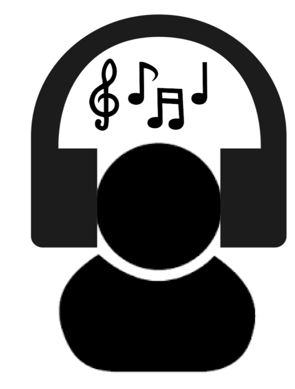
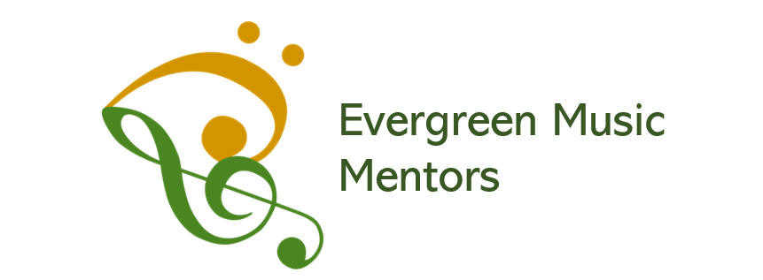
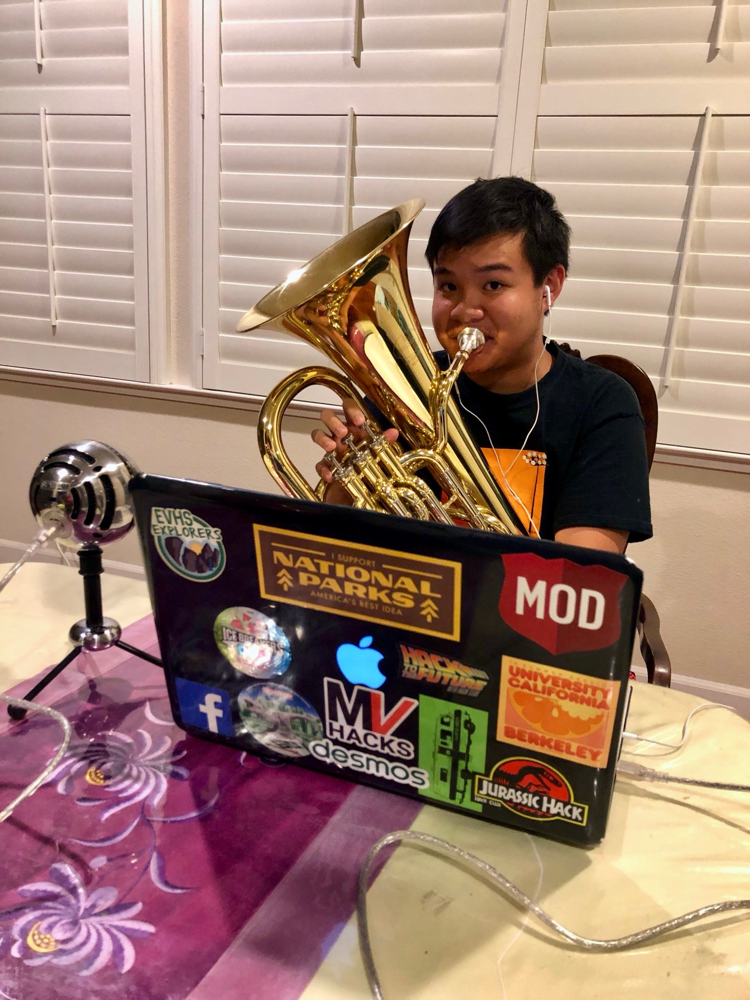
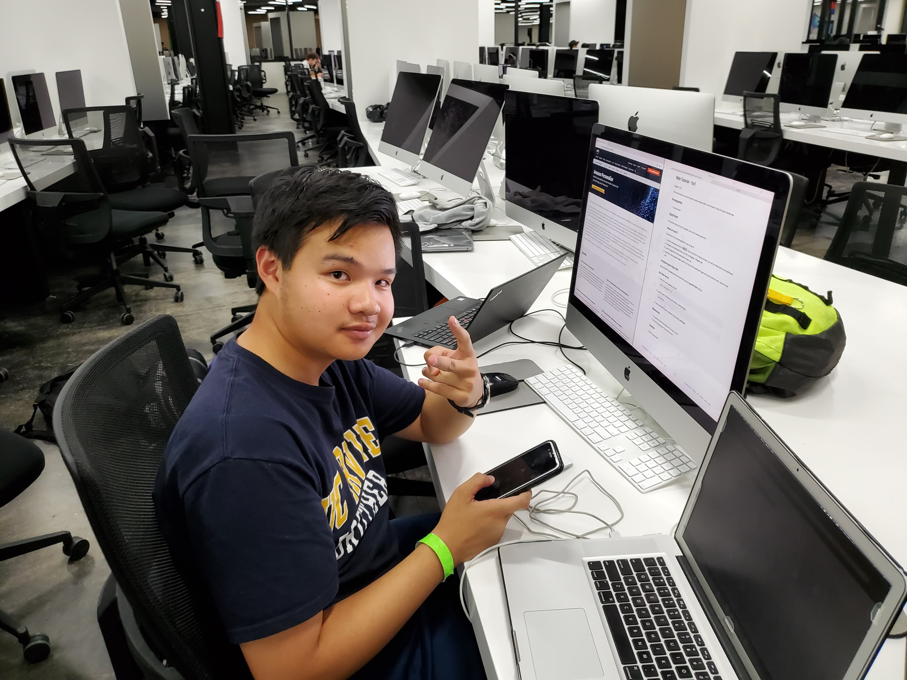

What is Cybernotes?

Cybernotes is a Web Application that was meant to made Video Conferencing easy and convenient for the everyday musician. Not every musician is quite adapted to the current technology that exists today, so we want to make video sessions as seamless as possible. It features Google's WebRTC, an open-source API in which we will improve on. Video enhancements will be made depending of microphone and webcam the user has. Additional features include live sheet music viewing, so you can view music material while having a lesson. Cybernotes plans to release its beta version to Evergreen Music Mentors, so sign up on their website to be the first to try it out! Pursuit your online musical endeavors with Cybernotes!
Let's teach music on the Virtual Web!
How Did We Come to Be?

In October 2018, the Evergreen Music Mentors formed to help younger band students get better at their instruments. Operations have been proven successful, with over 2 sessions happening each week between band sections. Now that it is summer time, students at Evergreen Music Mentors tend to not play their instrument because they have no incentive to. With Cybernotes, not only does it brings student's motivation back, it also makes them better as a musician with a virtual client session. Evergreen Music Mentors will acquire this devolpment software by mid-July of 2019.

Music Software for Music!
Who made this Possible?

Timothy is a recently graduated senior from Evergreen Valley High School, based in San Jose, CA. Throughout all 4 years of High School, he was part of the band program, participating in the marching band and honor band ensembles. He founded a company called Evergreen Music Mentors, a company dedicated to tutoring young student on musical instruments. In addition to that, Timothy also had a spark in Computer Science, taking AP Computer Science A in his senior year. He then attended multiple hackathons, such as MVHacks and AngelHacks to learn more languages than just ordinary Java. With this amount of involement in both the coding and music community, he decided that over the summer, he will be developing Cybernotes to benefit Evergreen Music Mentors and the WebRTC community.